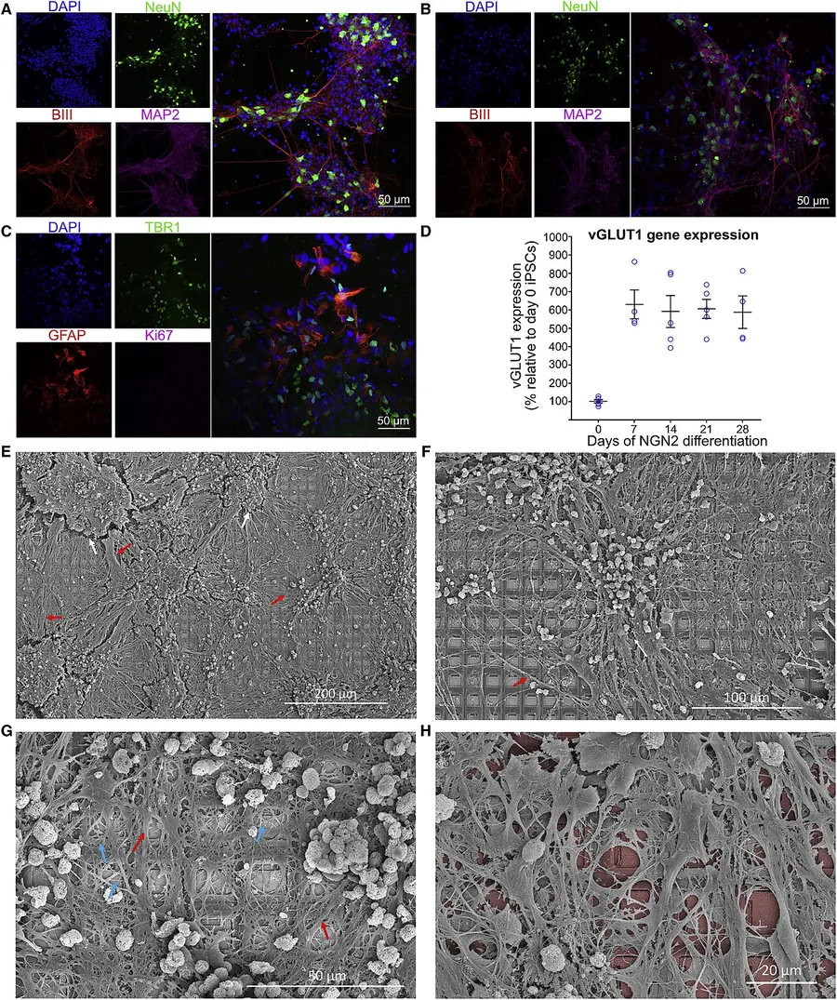
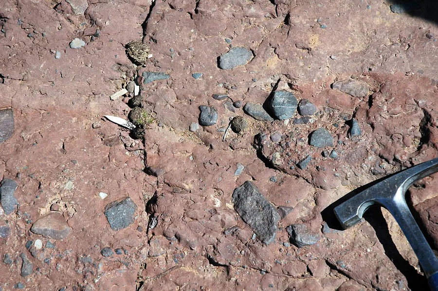

Attribution178 photographs · 18 drawn figures
Image Credits
Every picture on this site, with its author, its licence and a link to the original. Nothing here is used without a free licence, and nothing is uncredited.
All images are hosted locally so the archive works offline, but each one was published under a public-domain, CC0 or Creative Commons licence on Wikimedia Commons. Follow a source link to see the full file page, the licence deed and any reuse conditions. Where a licence requires attribution, the author is named here and in the caption on the page itself.
 Underwater June 1 056 (3029564133).jpgSandy Chase · CC BY 2.0 · source
Underwater June 1 056 (3029564133).jpgSandy Chase · CC BY 2.0 · source Palladium (Element - 46) 1.jpgJames St. John · CC BY 2.0 · source
Palladium (Element - 46) 1.jpgJames St. John · CC BY 2.0 · source Stevns Klint, Cretaceous-Paleogene boundary.jpgBasaltWeaver · CC BY 4.0 · source
Stevns Klint, Cretaceous-Paleogene boundary.jpgBasaltWeaver · CC BY 4.0 · source Canadian Hydrogen Intensity Mapping Experiment - antennas.jpgZ22 · CC BY-SA 4.0 · source
Canadian Hydrogen Intensity Mapping Experiment - antennas.jpgZ22 · CC BY-SA 4.0 · source
Cortical cells form dense interconnected networks when trained to play Pong.jpgAuthors of the study: Brett J. Kagan Andy C. Kitchen Nhi T. Tran Forough Habibol · CC BY 4.0 · source- Carol Dweck for Innovation documentary.jpgSatheesh Gopalan · CC BY-SA 3.0 · source
 Children in Classroom in Keene New Hampshire (5448787350).jpgKeene and Cheshire County (NH) Historical Photos · No restrictions · source
Children in Classroom in Keene New Hampshire (5448787350).jpgKeene and Cheshire County (NH) Historical Photos · No restrictions · source Erithacus rubecula with cocked head.jpgFrancis C. Franklin · CC BY-SA 3.0 · source
Erithacus rubecula with cocked head.jpgFrancis C. Franklin · CC BY-SA 3.0 · source William James self-portrait.jpgWilliam James · Public domain · source
William James self-portrait.jpgWilliam James · Public domain · source Valaciclovir Blister packs.jpgHanabishi · CC0 · source
Valaciclovir Blister packs.jpgHanabishi · CC0 · source Anatomy of Anterior Vagus Nerve Diagram.jpgDr. Swapnil Banerjee · CC BY-SA 4.0 · source
Anatomy of Anterior Vagus Nerve Diagram.jpgDr. Swapnil Banerjee · CC BY-SA 4.0 · source
Tillite (Elatina Formation, Neoproterozoic; Enorama Creek section, Flinders Ranges, South Australia) 10.jpgJames St. John · CC BY 2.0 · source Halodi Robotics' Perception Engineer With a Humanoid Collaborative Robot.jpgNicholas-halodi · CC BY-SA 4.0 · source
Halodi Robotics' Perception Engineer With a Humanoid Collaborative Robot.jpgNicholas-halodi · CC BY-SA 4.0 · source NFDRS algorithm flowchart 042104.jpgKevin Scasny · Public domain · source
NFDRS algorithm flowchart 042104.jpgKevin Scasny · Public domain · source -46.1- alois alzheimer 1906.jpgH.-P.Haack, Leipzig · Public domain · source
-46.1- alois alzheimer 1906.jpgH.-P.Haack, Leipzig · Public domain · source Amityville air view.jpgEdith Evan's Real Estate · Public domain · source
Amityville air view.jpgEdith Evan's Real Estate · Public domain · source Infrared measurements detect boundary of Gulf Stream - the forerunner of today's sea surface temperature mapping derived from infrared sensing data (2282-5).jpgNOAA · Public domain · source
Infrared measurements detect boundary of Gulf Stream - the forerunner of today's sea surface temperature mapping derived from infrared sensing data (2282-5).jpgNOAA · Public domain · source Anastasia, Maria and Tatiana Nikolaevna of Russia during twig picking.jpgRomanov family; coloration by Anastasia Nikolaevna of Russia · Public domain · source
Anastasia, Maria and Tatiana Nikolaevna of Russia during twig picking.jpgRomanov family; coloration by Anastasia Nikolaevna of Russia · Public domain · source Blue Marble 2002.pngNASA’s Terra satellite for the MODIS imageries, combined by Meow. Credit: NASA Goddard Space Flight Center Image by Reto Stöckli (land surface, shallow water, clouds). Enhancements · Public domain · source
Blue Marble 2002.pngNASA’s Terra satellite for the MODIS imageries, combined by Meow. Credit: NASA Goddard Space Flight Center Image by Reto Stöckli (land surface, shallow water, clouds). Enhancements · Public domain · source Byrd Glacier, Antarctica (15473582067).jpgNASA on The Commons · No restrictions · source
Byrd Glacier, Antarctica (15473582067).jpgNASA on The Commons · No restrictions · source Sand clock Enschede.jpgGianluca Miscione · CC BY-SA 4.0 · source
Sand clock Enschede.jpgGianluca Miscione · CC BY-SA 4.0 · source Empty hallway with exit sign.jpgYitzilitt · CC BY-SA 4.0 · source
Empty hallway with exit sign.jpgYitzilitt · CC BY-SA 4.0 · source APOLLON TEMPLE DELPHI.jpgJBBS · CC BY-SA 3.0 · source
APOLLON TEMPLE DELPHI.jpgJBBS · CC BY-SA 3.0 · source Accretion Disk around binary star system WZ Sge - new model (noao0802b).jpgP. Marenfeld and NOIRLab/NSF/AURA · CC BY 4.0 · source
Accretion Disk around binary star system WZ Sge - new model (noao0802b).jpgP. Marenfeld and NOIRLab/NSF/AURA · CC BY 4.0 · source Bitcoin mining farm.jpgMarko Ahtisaari · CC BY 2.0 · source
Bitcoin mining farm.jpgMarko Ahtisaari · CC BY 2.0 · source NISAR satellite orbit (SVS5615 - 2415).jpgNASA's Scientific Visualization Studio - Science and Technology Corporation/Kel Elkins · Public domain · source
NISAR satellite orbit (SVS5615 - 2415).jpgNASA's Scientific Visualization Studio - Science and Technology Corporation/Kel Elkins · Public domain · source Black Swan at Martin Mere.JPGFrancis C. Franklin · CC BY-SA 3.0 · source
Black Swan at Martin Mere.JPGFrancis C. Franklin · CC BY-SA 3.0 · source Apollo 17 Blue Marble original orientation (AS17-148-22727).jpgNASA · Public domain · source
Apollo 17 Blue Marble original orientation (AS17-148-22727).jpgNASA · Public domain · source Portrait of Ludwig Boltzmann.jpgAmerican Institute of Physics · Attribution · source
Portrait of Ludwig Boltzmann.jpgAmerican Institute of Physics · Attribution · source Visoko from the Visočica hill.jpgMhare · CC BY-SA 4.0 · source
Visoko from the Visočica hill.jpgMhare · CC BY-SA 4.0 · source Albino python panhandler told to leave by NYPD officer, Times Square (December 29, 2023) 04.jpgKiran891 · CC BY-SA 4.0 · source
Albino python panhandler told to leave by NYPD officer, Times Square (December 29, 2023) 04.jpgKiran891 · CC BY-SA 4.0 · source Cardiff Giant LCCN2014693762.jpgC. O. Gott (1869), Library of Congress · Public domain · source
Cardiff Giant LCCN2014693762.jpgC. O. Gott (1869), Library of Congress · Public domain · source John searle2.jpgMatthew Breindel uploader Matro at en.wikipedia · CC BY-SA 3.0 · source
John searle2.jpgMatthew Breindel uploader Matro at en.wikipedia · CC BY-SA 3.0 · source 4DX seats in cinema (motion and environmental effects synced with the on-screen action) bench rows in a movie theater hall Kinostoler kinosal Kilden kino Tønsberg, Norway 2023 IMG 7849.jpgWolfmann · CC BY-SA 4.0 · source
4DX seats in cinema (motion and environmental effects synced with the on-screen action) bench rows in a movie theater hall Kinostoler kinosal Kilden kino Tønsberg, Norway 2023 IMG 7849.jpgWolfmann · CC BY-SA 4.0 · source Ziwani Primary School renovation dedication DVIDS179360.jpgStaff Sgt. Joseph Swafford · Public domain · source
Ziwani Primary School renovation dedication DVIDS179360.jpgStaff Sgt. Joseph Swafford · Public domain · source Crop circle fake swr 17-02-05.jpgRoger Zenner · CC BY-SA 3.0 · source
Crop circle fake swr 17-02-05.jpgRoger Zenner · CC BY-SA 3.0 · source Danse Saint Guy 1518 Charles Spindler.jpgCharles Spindler · Public domain · source
Danse Saint Guy 1518 Charles Spindler.jpgCharles Spindler · Public domain · source Alishan National Forest Recreation Area Starry Sky (Huaiwun).jpgHuaiwun · CC BY-SA 4.0 · source
Alishan National Forest Recreation Area Starry Sky (Huaiwun).jpgHuaiwun · CC BY-SA 4.0 · source Bullet Cluster with DECam (noirlab2603a).jpgCTIO/NOIRLab/DOE/NSF/AURA Image Processing: T.A. Rector (University of Alaska Anchorage/NSF NOIRLab) & M. Zamani (NS · CC BY 4.0 · source
Bullet Cluster with DECam (noirlab2603a).jpgCTIO/NOIRLab/DOE/NSF/AURA Image Processing: T.A. Rector (University of Alaska Anchorage/NSF NOIRLab) & M. Zamani (NS · CC BY 4.0 · source 40013-Gould Finches.pngMoses J. Michelsohn · CC BY 4.0 · source
40013-Gould Finches.pngMoses J. Michelsohn · CC BY 4.0 · source Datacenter Server Racks (22370909788).jpgCarl Lender from Sunrise, USA · CC BY 2.0 · source
Datacenter Server Racks (22370909788).jpgCarl Lender from Sunrise, USA · CC BY 2.0 · source Brussels NATO Headquarters.jpgAd Meskens · CC BY-SA 4.0 · source
Brussels NATO Headquarters.jpgAd Meskens · CC BY-SA 4.0 · source Bear Lodge Butte (Devil’s Tower), Devils Tower National Monument, Devils Tower, WY.jpgw_lemay · CC BY-SA 2.0 · source
Bear Lodge Butte (Devil’s Tower), Devils Tower National Monument, Devils Tower, WY.jpgw_lemay · CC BY-SA 2.0 · source Aerial view of the crowd at the Government Center ground-breaking (13853634075).jpgCity of Boston Archives from West Roxbury, United States · CC BY 2.0 · source
Aerial view of the crowd at the Government Center ground-breaking (13853634075).jpgCity of Boston Archives from West Roxbury, United States · CC BY 2.0 · source White-eyed Drosophila.jpgPaul Reynolds (Flickr user sylverwytche) · CC BY 2.5 · source
White-eyed Drosophila.jpgPaul Reynolds (Flickr user sylverwytche) · CC BY 2.5 · source Hadza tribe men.jpgErasmus Kamugisha · CC BY-SA 4.0 · source
Hadza tribe men.jpgErasmus Kamugisha · CC BY-SA 4.0 · source Snow in the Ural Mountains (MODIS 2016-05-03).jpgJeff Schmaltz, MODIS Land Rapid Response Team, NASA GSFC · Public domain · source
Snow in the Ural Mountains (MODIS 2016-05-03).jpgJeff Schmaltz, MODIS Land Rapid Response Team, NASA GSFC · Public domain · source NASA solar power satellite concept 1976.jpgNASA · Public domain · source
NASA solar power satellite concept 1976.jpgNASA · Public domain · source Social Media App Icons On The Screen of A Smartphone.jpgmikemacmarketing · CC BY 2.0 · source
Social Media App Icons On The Screen of A Smartphone.jpgmikemacmarketing · CC BY 2.0 · source Dickinsonia - Ediacaran Fossil from Flinders Range in South Australia.jpgcprevot (https://www.geodiversite.net/auteur193) · CC BY-SA 3.0 · source
Dickinsonia - Ediacaran Fossil from Flinders Range in South Australia.jpgcprevot (https://www.geodiversite.net/auteur193) · CC BY-SA 3.0 · source 6-Pack-Chicken-Eggs.jpgEvan-Amos · Public domain · source
6-Pack-Chicken-Eggs.jpgEvan-Amos · Public domain · source New Zealand soldiers buying sweets from a French girl, World War I (21639384646).jpgNational Library NZ on The Commons · No restrictions · source
New Zealand soldiers buying sweets from a French girl, World War I (21639384646).jpgNational Library NZ on The Commons · No restrictions · source Electronic microscopy picture of a muscle.jpgGiolicc · CC BY 4.0 · source
Electronic microscopy picture of a muscle.jpgGiolicc · CC BY 4.0 · source Great Seal du Simitiere proposal sketch.jpgPierre Eugène du Simitière · Public domain · source
Great Seal du Simitiere proposal sketch.jpgPierre Eugène du Simitière · Public domain · source Illustration of Wind from Accretion Disk Around a Black Hole (2004-h1413-more-3 - accretion reddisk diamond).tiff(Credit: NASA/CXC/M.Weiss) · Public domain · source
Illustration of Wind from Accretion Disk Around a Black Hole (2004-h1413-more-3 - accretion reddisk diamond).tiff(Credit: NASA/CXC/M.Weiss) · Public domain · source Masks, Women trams conductors, numbers 2120, 2118, 2196 detail, from- Medical Department - Influenza Epidemic 1918 - Masks for protection against influenza. New York City conductorettes wearing masks - NARA - 45499323 (cropped).jpgUnknown authorUnknown author or not provided · Public domain · source
Masks, Women trams conductors, numbers 2120, 2118, 2196 detail, from- Medical Department - Influenza Epidemic 1918 - Masks for protection against influenza. New York City conductorettes wearing masks - NARA - 45499323 (cropped).jpgUnknown authorUnknown author or not provided · Public domain · source Bitcoin BTC Golden coins 8K wallpaper.jpgSatheesh Sankaran · CC BY-SA 2.0 · source
Bitcoin BTC Golden coins 8K wallpaper.jpgSatheesh Sankaran · CC BY-SA 2.0 · source ITER Tokamak and Plant Systems (2016) (41783636452).jpgOak Ridge National Laboratory · CC BY 2.0 · source
ITER Tokamak and Plant Systems (2016) (41783636452).jpgOak Ridge National Laboratory · CC BY 2.0 · source Apollo 17 Blue Marble original orientation (AS17-148-22727).jpgNASA · Public domain · source
Apollo 17 Blue Marble original orientation (AS17-148-22727).jpgNASA · Public domain · source The Andes of southern Peru, geographical reconnaissance along the seventy-third meridian (1916) (14782282382).jpgInternet Archive Book Images · No restrictions · source
The Andes of southern Peru, geographical reconnaissance along the seventy-third meridian (1916) (14782282382).jpgInternet Archive Book Images · No restrictions · source Great Pyramid of Giza.jpgkallerna · CC BY-SA 3.0 · source
Great Pyramid of Giza.jpgkallerna · CC BY-SA 3.0 · source Orlando-Ferguson-flat-earth-map.jpgOrlando Ferguson · Public domain · source
Orlando-Ferguson-flat-earth-map.jpgOrlando Ferguson · Public domain · source Göbekli Tepe.jpgCreator:Rolfcosar · CC BY-SA 3.0 · source
Göbekli Tepe.jpgCreator:Rolfcosar · CC BY-SA 3.0 · source Center of the Milky Way Galaxy IV – Composite.jpgNASA/JPL-Caltech/ESA/CXC/STScI · Public domain · source
Center of the Milky Way Galaxy IV – Composite.jpgNASA/JPL-Caltech/ESA/CXC/STScI · Public domain · source Semiconductor clean room.jpgAileen Devlin/Jefferson Lab from Newport News, USA · Public domain · source
Semiconductor clean room.jpgAileen Devlin/Jefferson Lab from Newport News, USA · Public domain · source Intestinal villi through microscope.jpgJamil Baza · CC BY 4.0 · source
Intestinal villi through microscope.jpgJamil Baza · CC BY 4.0 · source 2023 Oct - Berlin - Führerbunker.jpgChainwit. · CC BY-SA 4.0 · source
2023 Oct - Berlin - Führerbunker.jpgChainwit. · CC BY-SA 4.0 · source Kircher Mundus Subterraneus fire canals.jpgAthanasius Kircher · Public domain · source
Kircher Mundus Subterraneus fire canals.jpgAthanasius Kircher · Public domain · source Irregular interference pattern.JPGGapcf · CC0 · source
Irregular interference pattern.JPGGapcf · CC0 · source James Webb Space Telescope Mirror37.jpgNASA/MSFC/David Higginbotham/Emmett Given · Public domain · source
James Webb Space Telescope Mirror37.jpgNASA/MSFC/David Higginbotham/Emmett Given · Public domain · source Eifuku chimneys.jpgNOAA · Public domain · source
Eifuku chimneys.jpgNOAA · Public domain · source TUM Hyperloop Test Track.jpgPhoto MF · CC BY-SA 4.0 · source
TUM Hyperloop Test Track.jpgPhoto MF · CC BY-SA 4.0 · source EEG Recording Cap.jpgChris Hope · CC BY 2.0 · source
EEG Recording Cap.jpgChris Hope · CC BY 2.0 · source Cosmic Microwave Background (CMB).jpegESA and the Planck Collaboration · CC BY 4.0 · source
Cosmic Microwave Background (CMB).jpegESA and the Planck Collaboration · CC BY 4.0 · source Maquina vapor Watt ETSIIM.jpgNicolás Pérez · CC BY-SA 3.0 · source
Maquina vapor Watt ETSIIM.jpgNicolás Pérez · CC BY-SA 3.0 · source Milky Way IR Spitzer.jpgCredit: NASA/JPL-Caltech/S. Stolovy (Spitzer Science Center/Caltech) · Public domain · source
Milky Way IR Spitzer.jpgCredit: NASA/JPL-Caltech/S. Stolovy (Spitzer Science Center/Caltech) · Public domain · source Calymene Trilobite Fossil.jpgHallettx · CC BY-SA 4.0 · source
Calymene Trilobite Fossil.jpgHallettx · CC BY-SA 4.0 · source EthylCorporationSign.jpgPlazak · CC BY-SA 3.0 · source
EthylCorporationSign.jpgPlazak · CC BY-SA 3.0 · source African biography reference books - Main Reading Room - Library of Congress.jpgDjembayz · CC BY-SA 3.0 · source
African biography reference books - Main Reading Room - Library of Congress.jpgDjembayz · CC BY-SA 3.0 · source Book of Hours (Use of Metz) Fol. 27r, Decorated Initials.tifUnknown artistUnknown artist · Public domain · source
Book of Hours (Use of Metz) Fol. 27r, Decorated Initials.tifUnknown artistUnknown artist · Public domain · source Loch ness , Urquhart castle exit .jpgDonpeeter · CC BY-SA 4.0 · source
Loch ness , Urquhart castle exit .jpgDonpeeter · CC BY-SA 4.0 · source Minuteman III in silo 1989.jpgWikimedia Commons contributor · Public domain · source
Minuteman III in silo 1989.jpgWikimedia Commons contributor · Public domain · source Alpha Magnetic Spectrometer - 02.jpgNASA · Public domain · source
Alpha Magnetic Spectrometer - 02.jpgNASA · Public domain · source FMNH Woolly Mammoth.jpgZissoudisctrucker · CC BY-SA 4.0 · source
FMNH Woolly Mammoth.jpgZissoudisctrucker · CC BY-SA 4.0 · source Nelson Mandela 1994.jpgKingkongphoto & www.celebrity-photos.com from Laurel · CC BY-SA 2.0 · source
Nelson Mandela 1994.jpgKingkongphoto & www.celebrity-photos.com from Laurel · CC BY-SA 2.0 · source Schrodinger cat in box.jpgADA&Neagoe · CC BY-SA 3.0 · source
Schrodinger cat in box.jpgADA&Neagoe · CC BY-SA 3.0 · source New York Stock Exchange trading floor on Wall Street, New York, New York LCCN2011634218.tifCarol M. Highsmith · Public domain · source
New York Stock Exchange trading floor on Wall Street, New York, New York LCCN2011634218.tifCarol M. Highsmith · Public domain · source Mary Celeste as Amazon in 1861.jpgUnconfirmed, possibly Honore Pellegrin (1800–c.1870). This speculative attribution is suggested in Paul Begg: Mary Celeste: The Greatest Mystery of the Sea. Longmans Educ · Public domain · source
Mary Celeste as Amazon in 1861.jpgUnconfirmed, possibly Honore Pellegrin (1800–c.1870). This speculative attribution is suggested in Paul Begg: Mary Celeste: The Greatest Mystery of the Sea. Longmans Educ · Public domain · source Freemasons' Hall, London 2017-09-17-1.jpgColin · CC BY-SA 4.0 · source
Freemasons' Hall, London 2017-09-17-1.jpgColin · CC BY-SA 4.0 · source Aztec Sun Stone or Calendar Stone.jpgGary Todd · CC0 · source
Aztec Sun Stone or Calendar Stone.jpgGary Todd · CC0 · source Political Spectrum Chart NPOV ukr.pngВолодимир Ф · CC BY-SA 4.0 · source
Political Spectrum Chart NPOV ukr.pngВолодимир Ф · CC BY-SA 4.0 · source 9M-MRF Boeing 777 Malaysia (7348432928).jpgAeroprints.com · CC BY-SA 3.0 · source
9M-MRF Boeing 777 Malaysia (7348432928).jpgAeroprints.com · CC BY-SA 3.0 · source Mid-atlantic ridge.jpgUnknown · CC BY-SA 3.0 · source
Mid-atlantic ridge.jpgUnknown · CC BY-SA 3.0 · source Fast Food Workers' Right Demo at McDonald's.jpgWar on Want · CC BY 2.0 · source
Fast Food Workers' Right Demo at McDonald's.jpgWar on Want · CC BY 2.0 · source Federal Reserve Bank Building (36344p).jpgRhododendrites · CC BY-SA 4.0 · source
Federal Reserve Bank Building (36344p).jpgRhododendrites · CC BY-SA 4.0 · source VST snaps a very detailed view of the Triangulum Galaxy.jpgESO · CC BY 4.0 · source
VST snaps a very detailed view of the Triangulum Galaxy.jpgESO · CC BY 4.0 · source Aldrin Apollo 11.jpgNeil A. Armstrong · Public domain · source
Aldrin Apollo 11.jpgNeil A. Armstrong · Public domain · source Silicon wafer close view.jpgLe hollandais volant · CC BY 4.0 · source
Silicon wafer close view.jpgLe hollandais volant · CC BY 4.0 · source Fermilab g-2 (E989) ring.jpgReidar Hahn · CC BY-SA 4.0 · source
Fermilab g-2 (E989) ring.jpgReidar Hahn · CC BY-SA 4.0 · source Líneas de Nazca, Nazca, Perú, 2015-07-29, DD 39.JPGDiego Delso · CC BY-SA 4.0 · source
Líneas de Nazca, Nazca, Perú, 2015-07-29, DD 39.JPGDiego Delso · CC BY-SA 4.0 · source (Venice) Animals Entering Noah's Ark by Jacopo Da Ponte (workshop) - gallerie Accademia.jpgDidier Descouens · Public domain · source
(Venice) Animals Entering Noah's Ark by Jacopo Da Ponte (workshop) - gallerie Accademia.jpgDidier Descouens · Public domain · source Digs and Buildings, photo 1, Oak Island, Nova Scotia, Canada, August 1931.jpgRichard McCully · Public domain · source
Digs and Buildings, photo 1, Oak Island, Nova Scotia, Canada, August 1931.jpgRichard McCully · Public domain · source Military laser experiment.jpgUS Air Force · Public domain · source
Military laser experiment.jpgUS Air Force · Public domain · source Gravitational lensing in the galaxy cluster Abell 370 (captured by the Hubble Space Telescope).jpgNASA, ESA, the Hubble SM4 ERO Team and ST-ECF · CC BY 4.0 · source
Gravitational lensing in the galaxy cluster Abell 370 (captured by the Hubble Space Telescope).jpgNASA, ESA, the Hubble SM4 ERO Team and ST-ECF · CC BY 4.0 · source BalticServers data center.jpgBalticServers.com · CC BY-SA 3.0 · source
BalticServers data center.jpgBalticServers.com · CC BY-SA 3.0 · source MARUM Schwarzer Raucher.jpgMARUM − Zentrum für Marine Umweltwissenschaften, Universität Bremen · CC BY 4.0 · source
MARUM Schwarzer Raucher.jpgMARUM − Zentrum für Marine Umweltwissenschaften, Universität Bremen · CC BY 4.0 · source Artist impression of interstellar asteroid ʻOumuamua (eso1737e).tiffESO/M. Kornmesser · CC BY 4.0 · source
Artist impression of interstellar asteroid ʻOumuamua (eso1737e).tiffESO/M. Kornmesser · CC BY 4.0 · source Maya Jade Mask & Burial Artifacts of Kinich Hanab Pakal, Ruler of Palenque, 615-683 AD.jpgGary Todd · CC0 · source
Maya Jade Mask & Burial Artifacts of Kinich Hanab Pakal, Ruler of Palenque, 615-683 AD.jpgGary Todd · CC0 · source Relationship graph of Panama Papers.pngIamfscked · CC BY-SA 4.0 · source
Relationship graph of Panama Papers.pngIamfscked · CC BY-SA 4.0 · source Abbey Road zebra crossing, 24-11-2015.jpgPeter Heeling · CC0 · source
Abbey Road zebra crossing, 24-11-2015.jpgPeter Heeling · CC0 · source Corte de EE.UU. rechaza apelación de NSO Group en litigio contra WhatsApp.jpgGibrán Aquino · CC BY-SA 4.0 · source
Corte de EE.UU. rechaza apelación de NSO Group en litigio contra WhatsApp.jpgGibrán Aquino · CC BY-SA 4.0 · source Desert elephant (Loxodonta africana) spraying sand.jpgCharles J. Sharp · CC BY-SA 4.0 · source
Desert elephant (Loxodonta africana) spraying sand.jpgCharles J. Sharp · CC BY-SA 4.0 · source Fossilized wood at Petrified Forest.jpgKumar Appaiah · CC BY-SA 2.0 · source
Fossilized wood at Petrified Forest.jpgKumar Appaiah · CC BY-SA 2.0 · source 1512 Dürer Kaiser Karl der Große anagoria.JPGAlbrecht Dürer (scan: anagoria) · Public domain · source
1512 Dürer Kaiser Karl der Große anagoria.JPGAlbrecht Dürer (scan: anagoria) · Public domain · source Evening in Venus, 1033379.jpgWikimedia Commons contributor · Public domain · source
Evening in Venus, 1033379.jpgWikimedia Commons contributor · Public domain · source Young Diffraction.pngWikimedia Commons contributor · Public domain · source
Young Diffraction.pngWikimedia Commons contributor · Public domain · source 1930's 35mm Gaumont Kalee film projector..jpgYellowFratello · CC BY-SA 4.0 · source
1930's 35mm Gaumont Kalee film projector..jpgYellowFratello · CC BY-SA 4.0 · source Smallest Kuiper Belt Object detected (artist's impression) (opo0933b).jpgNASA, ESA, and G. Bacon (STScI) · CC BY 4.0 · source
Smallest Kuiper Belt Object detected (artist's impression) (opo0933b).jpgNASA, ESA, and G. Bacon (STScI) · CC BY 4.0 · source CERN Server 03.jpgFlorian Hirzinger - www.fh-ap.com · CC BY-SA 3.0 · source
CERN Server 03.jpgFlorian Hirzinger - www.fh-ap.com · CC BY-SA 3.0 · source Black Hole Accretion Disk Annotated (black-hole-accretion-disk-annotation).jpgNOIRLab/NSF/AURA/P. Marenfeld · CC BY 4.0 · source
Black Hole Accretion Disk Annotated (black-hole-accretion-disk-annotation).jpgNOIRLab/NSF/AURA/P. Marenfeld · CC BY 4.0 · source Trilobite fossil, Desert Museum.jpgJuan Carlos Fonseca Mata · CC BY-SA 4.0 · source
Trilobite fossil, Desert Museum.jpgJuan Carlos Fonseca Mata · CC BY-SA 4.0 · source IBM Quantum Computer Demo.jpgDev Jadiya · CC BY-SA 4.0 · source
IBM Quantum Computer Demo.jpgDev Jadiya · CC BY-SA 4.0 · source Navaho Dilution Refrigerator.pngOJB Quantum · CC BY 4.0 · source
Navaho Dilution Refrigerator.pngOJB Quantum · CC BY 4.0 · source Hydrogen Density Plots.pngPoorLeno (talk) · Public domain · source
Hydrogen Density Plots.pngPoorLeno (talk) · Public domain · source Voters in queue (3005537596).jpgrochelle hartman · CC BY 2.0 · source
Voters in queue (3005537596).jpgrochelle hartman · CC BY 2.0 · source Dup15q EEG signature.pngFrohlich, J., Senturk, D., Saravanapandian, V., Golshani, P., Reiter, L.T., Sankar, R., Thibert, R.L., DiStefano, C., Hu · CC BY 4.0 · source
Dup15q EEG signature.pngFrohlich, J., Senturk, D., Saravanapandian, V., Golshani, P., Reiter, L.T., Sankar, R., Thibert, R.L., DiStefano, C., Hu · CC BY 4.0 · source Worlds largest crude destillation column Dangote.jpgFrankvEck · CC BY-SA 4.0 · source
Worlds largest crude destillation column Dangote.jpgFrankvEck · CC BY-SA 4.0 · source Georg Friedrich Bernhard Riemann.jpegWikimedia Commons contributor · Public domain · source
Georg Friedrich Bernhard Riemann.jpegWikimedia Commons contributor · Public domain · source Americæ pars, nunc Virginia dicta (Roanoke detail, 1590)John White / Theodor de Bry, Library of Congress · Public domain · source
Americæ pars, nunc Virginia dicta (Roanoke detail, 1590)John White / Theodor de Bry, Library of Congress · Public domain · source M.C. Escher Robot Head by DALL-E 2.jpgGenerated by DALL·E 2 artificial intelligence; prompted by Ben Barry (United States) · Public domain · source
M.C. Escher Robot Head by DALL-E 2.jpgGenerated by DALL·E 2 artificial intelligence; prompted by Ben Barry (United States) · Public domain · source Roswell Daily Record. July 8, 1947. RAAF Captures Flying Saucer On Ranch in Roswell Region. Full front page.jpgRoswell Daily Record. · Public domain · source
Roswell Daily Record. July 8, 1947. RAAF Captures Flying Saucer On Ranch in Roswell Region. Full front page.jpgRoswell Daily Record. · Public domain · source A salem witch trial small.jpgFrank O. Small (1860-1915) · Public domain · source
A salem witch trial small.jpgFrank O. Small (1860-1915) · Public domain · source Graphics Card Diamond Viper 330 with Nvidia (RIVA 128) GPU.jpgTimothy Borkowski · CC BY-SA 3.0 · source
Graphics Card Diamond Viper 330 with Nvidia (RIVA 128) GPU.jpgTimothy Borkowski · CC BY-SA 3.0 · source Salar de Olaroz, Jujuy, Argentina.jpgCoordenação-Geral de Observação da Terra/INPE · CC BY-SA 2.0 · source
Salar de Olaroz, Jujuy, Argentina.jpgCoordenação-Geral de Observação da Terra/INPE · CC BY-SA 2.0 · source Adolescents en promenade sur la Seudre (1).JPGJean-Pierre Bazard Jpbazard · CC BY 4.0 · source
Adolescents en promenade sur la Seudre (1).JPGJean-Pierre Bazard Jpbazard · CC BY 4.0 · source An artist's rendering of the CIA Original Headquarters Building (OHB).jpgCIA image · Public domain · source
An artist's rendering of the CIA Original Headquarters Building (OHB).jpgCIA image · Public domain · source China bond yields.webpWikideas1 · CC0 · source
China bond yields.webpWikideas1 · CC0 · source Datacenter Server Racks (22370909788).jpgCarl Lender from Sunrise, USA · CC BY 2.0 · source
Datacenter Server Racks (22370909788).jpgCarl Lender from Sunrise, USA · CC BY 2.0 · source First Folio, Shakespeare - 0154.jpgWilliam Shakespeare · Public domain · source
First Folio, Shakespeare - 0154.jpgWilliam Shakespeare · Public domain · source Balearen, Ibiza-Westküste, Wanderung Cala Codola geologische Verwerfungen - panoramio.jpgGottfried Hoffmann -… · CC BY 3.0 · source
Balearen, Ibiza-Westküste, Wanderung Cala Codola geologische Verwerfungen - panoramio.jpgGottfried Hoffmann -… · CC BY 3.0 · source Basilica Julia set with binary decomposition.pngAdam majewski · CC BY-SA 4.0 · source
Basilica Julia set with binary decomposition.pngAdam majewski · CC BY-SA 4.0 · source Sonoluminescence Setup.pngAolzick · CC BY-SA 3.0 · source
Sonoluminescence Setup.pngAolzick · CC BY-SA 3.0 · source EEG Recording Cap.jpgChris Hope · CC BY 2.0 · source
EEG Recording Cap.jpgChris Hope · CC BY 2.0 · source Types of Carbon Nanotubes.pngUser Mstroeck on en.wikipedia · CC BY-SA 3.0 · source
Types of Carbon Nanotubes.pngUser Mstroeck on en.wikipedia · CC BY-SA 3.0 · source 31- Villeneuve-lès-Bouloc - Eglise Saint-Pierre - Saint-Georges terrassant le dragon.jpgDidier Descouens · Public domain · source
31- Villeneuve-lès-Bouloc - Eglise Saint-Pierre - Saint-Georges terrassant le dragon.jpgDidier Descouens · Public domain · source BalticServers data center.jpgBalticServers.com · CC BY-SA 3.0 · source
BalticServers data center.jpgBalticServers.com · CC BY-SA 3.0 · source Psilocybe Cubensis Imire (Psilocybe Cubensis Zimbabwe) 10.jpgRobert van der Horst · CC BY-SA 4.0 · source
Psilocybe Cubensis Imire (Psilocybe Cubensis Zimbabwe) 10.jpgRobert van der Horst · CC BY-SA 4.0 · source Stonehenge, Condado de Wiltshire, Inglaterra, 2014-08-12, DD 08.JPGDiego Delso · CC BY-SA 4.0 · source
Stonehenge, Condado de Wiltshire, Inglaterra, 2014-08-12, DD 08.JPGDiego Delso · CC BY-SA 4.0 · source Exit from Calabi-Yau space.jpgOB1011 · CC BY 4.0 · source
Exit from Calabi-Yau space.jpgOB1011 · CC BY 4.0 · source Wafer 20110212.jpgSangitiana Fararano · CC BY-SA 2.0 · source
Wafer 20110212.jpgSangitiana Fararano · CC BY-SA 2.0 · source MRI Rasmussen's encephalitis.pngMikhail Kalinin · CC BY-SA 3.0 · source
MRI Rasmussen's encephalitis.pngMikhail Kalinin · CC BY-SA 3.0 · source The topology of 2x2 games.jpg// stpasha » · Public domain · source
The topology of 2x2 games.jpg// stpasha » · Public domain · source Views of the LHC tunnel sector 3-4, tirage 2.jpgMaximilien Brice (CERN) · CC BY-SA 3.0 · source
Views of the LHC tunnel sector 3-4, tirage 2.jpgMaximilien Brice (CERN) · CC BY-SA 3.0 · source KIC 8462852 October-December 2019 Gary.jpgBruce L. Gary · CC0 · source
KIC 8462852 October-December 2019 Gary.jpgBruce L. Gary · CC0 · source Karosseriebau, BMW Leipzig (body shop)BMW Werk Leipzig · CC BY-SA 2.0 de · source
Karosseriebau, BMW Leipzig (body shop)BMW Werk Leipzig · CC BY-SA 2.0 de · source Elizabeth Holmes of Theranos (15186113882).jpgKevin Krejci from Near the Pacific Ocean, USA · CC BY 2.0 · source
Elizabeth Holmes of Theranos (15186113882).jpgKevin Krejci from Near the Pacific Ocean, USA · CC BY 2.0 · source Thucydides-bust-cutout ROM.jpgWikimedia Commons contributor · Public domain · source
Thucydides-bust-cutout ROM.jpgWikimedia Commons contributor · Public domain · source Ellesmere Island Tiktaalik Location.jpgImage courtesy P. Timon McPhearson, American Museum of Natural History, based on data from Landsat 7 · Public domain · source
Ellesmere Island Tiktaalik Location.jpgImage courtesy P. Timon McPhearson, American Museum of Natural History, based on data from Landsat 7 · Public domain · source Liquid Crystal Phase Transition.jpgKarlGaff · CC BY 4.0 · source
Liquid Crystal Phase Transition.jpgKarlGaff · CC BY 4.0 · source Grandfather clock, instrument, electricity, pendulum, ink bottle Fortepan 62740.jpgFOTO:Fortepan — ID 62740: Adományozó/Donor: Veszprém Megyei Levéltár/Klauszer. · Public domain · source
Grandfather clock, instrument, electricity, pendulum, ink bottle Fortepan 62740.jpgFOTO:Fortepan — ID 62740: Adományozó/Donor: Veszprém Megyei Levéltár/Klauszer. · Public domain · source Cornelis Cornelisz. van Haarlem - The Fall of the Titans - Google Art Project.jpgCornelis van Haarlem · Public domain · source
Cornelis Cornelisz. van Haarlem - The Fall of the Titans - Google Art Project.jpgCornelis van Haarlem · Public domain · source Tunguska event effect areas 3.pngown work and chatGPT 4o and 3 AI · Public domain · source
Tunguska event effect areas 3.pngown work and chatGPT 4o and 3 AI · Public domain · source Phytoplankton bloom off South Africa (MODIS 2018-11-19).jpgMODIS Land Rapid Response Team, NASA GSFC · Public domain · source
Phytoplankton bloom off South Africa (MODIS 2018-11-19).jpgMODIS Land Rapid Response Team, NASA GSFC · Public domain · source Alan Turing by Stephen Kettle 2007.jpgDeFacto · CC BY-SA 4.0 · source
Alan Turing by Stephen Kettle 2007.jpgDeFacto · CC BY-SA 4.0 · source Funerary mask of Tutankhamun - 2015.jpgWael Mostafa · CC BY-SA 4.0 · source
Funerary mask of Tutankhamun - 2015.jpgWael Mostafa · CC BY-SA 4.0 · source Kombinat VEB Stern-Radio 135.JPGSebastian Wallroth · CC BY 3.0 · source
Kombinat VEB Stern-Radio 135.JPGSebastian Wallroth · CC BY 3.0 · source Figure 5- Implementing Partner Representatives Conducting Postdistribution Monitoring for USAID Emergency Food Security Program Cash Transfer Projects in Kenya (30182146472).jpgU.S. Government Accountability Office from Washington, DC, United States · Public domain · source
Figure 5- Implementing Partner Representatives Conducting Postdistribution Monitoring for USAID Emergency Food Security Program Cash Transfer Projects in Kenya (30182146472).jpgU.S. Government Accountability Office from Washington, DC, United States · Public domain · source Enterobacteria phage T2 transmission electron micrograph.jpgSnaxMikn · CC BY-SA 4.0 · source
Enterobacteria phage T2 transmission electron micrograph.jpgSnaxMikn · CC BY-SA 4.0 · source Voynich Manuscript (3).jpgUnknown authorUnknown author · Public domain · source
Voynich Manuscript (3).jpgUnknown authorUnknown author · Public domain · source Voynich Manuscript - folio 1r détail.jpgVoynich manuscript · CC BY-SA 4.0 · source
Voynich Manuscript - folio 1r détail.jpgVoynich manuscript · CC BY-SA 4.0 · source Robert Wadlow postcard.jpgUnknown authorUnknown author · Public domain · source
Robert Wadlow postcard.jpgUnknown authorUnknown author · Public domain · source Comet 67P on 19 September 2014 NavCam mosaic.jpgESA/Rosetta/NAVCAM, CC BY-SA IGO 3.0 · CC BY-SA 3.0 igo · source
Comet 67P on 19 September 2014 NavCam mosaic.jpgESA/Rosetta/NAVCAM, CC BY-SA IGO 3.0 · CC BY-SA 3.0 igo · source AWI Alfred-Wegener hg.jpgHannes Grobe (talk) · CC BY 3.0 · source
AWI Alfred-Wegener hg.jpgHannes Grobe (talk) · CC BY 3.0 · source Chicago World's Columbian Exposition, 1893 (2574825247).jpgSmithsonian Institution from United States · No restrictions · source
Chicago World's Columbian Exposition, 1893 (2574825247).jpgSmithsonian Institution from United States · No restrictions · source Artist’s impression of a gamma-ray burst shining through two young galaxies in the early Universe.jpgESO/L. Calçada · CC BY 4.0 · source
Artist’s impression of a gamma-ray burst shining through two young galaxies in the early Universe.jpgESO/L. Calçada · CC BY 4.0 · source Core SO130-289KL reflectance 3.pngMerikanto · CC BY 4.0 · source
Core SO130-289KL reflectance 3.pngMerikanto · CC BY 4.0 · source Zealandia, topographic map.jpgUlrich Lange, Bochum, Germany · CC0 · source
Zealandia, topographic map.jpgUlrich Lange, Bochum, Germany · CC0 · source Peterborough (AU), Port Campbell National Park, Worm Bay -- 2019 -- 0863.jpgDietmar Rabich · CC BY-SA 4.0 · source
Peterborough (AU), Port Campbell National Park, Worm Bay -- 2019 -- 0863.jpgDietmar Rabich · CC BY-SA 4.0 · source
.jpg){kind=link}
_1.jpg){kind=link}


.jpg){kind=link}


_10.jpg){kind=link}


.jpg){kind=link}


.jpg){kind=link}


.jpg){kind=link}

.jpg){kind=link}

.jpg){kind=link}


_04.jpg){kind=link}


_bench_rows_in_a_movie_theater_hall_Kinostoler_kinosal_Kilden_kino_T%C3%B8nsberg,_Norway_2023_IMG_7849.jpg){kind=link}


.jpg){kind=link}
.jpg){kind=link}

.jpg){kind=link}

,_Devils_Tower_National_Monument,_Devils_Tower,_WY.jpg){kind=link}
.jpg){kind=link}


.jpg){kind=link}


.jpg){kind=link}


.jpg){kind=link}

_(41783636452).jpg){kind=link}
_(14782282382).jpg){kind=link}


.jpeg){kind=link}


.jpg){kind=link}


.jpg){kind=link}


_ring.jpg){kind=link}

_Animals_Entering_Noah%27s_Ark_by_Jacopo_Da_Ponte_(workshop)_-_gallerie_Accademia.jpg){kind=link}


.jpg){kind=link}


_spraying_sand.jpg){kind=link}


_(opo0933b).jpg){kind=link}

.jpg){kind=link}


.jpg){kind=link}


_GPU.jpg){kind=link}

.JPG){kind=link}
.jpg){kind=link}


_10.jpg){kind=link}


.jpg){kind=link}


.jpg){kind=link}


.jpg){kind=link}

.jpg){kind=link}


.jpg){kind=link}


,_Port_Campbell_National_Park,_Worm_Bay_--_2019_--_0863.jpg){kind=link}
If you believe an image has been misattributed, contact the archive and it will be corrected or removed.